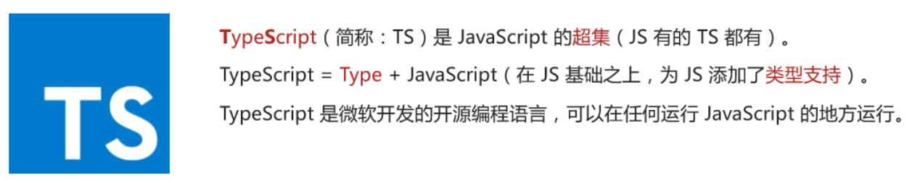
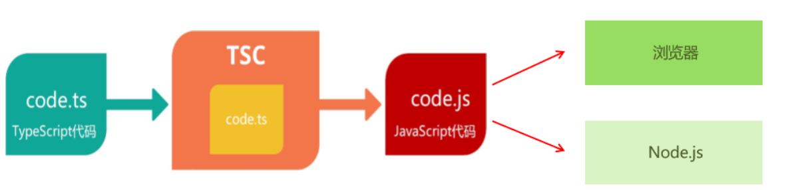

浅谈JavaScript
JavaScript是一门优秀的编程语言吗？
每个人可能观点并不完全一致，但是从很多角度来看，JavaScript是一门非常优秀的编程语言；
而且，可以说在很长一段时间内这个语言不会被代替，并且会在更多的领域被大家广泛使用；
著名的Atwood定律 ：
Stack Overflow的创立者之一的 Jeff Atwood 在2007年提出了著名的 Atwood定律 。
any application that can be written in JavaScript, will eventually be written in JavaScript.
任何可以使用JavaScript来实现的应用都最终都会使用JavaScript实现。
其实我们已经看到了，这句话正在一步步被应验：
Web端的开发我们一直都是使用JavaScript；
移动端开发可以借助于ReactNative、Weex、Uniapp等框架实现跨平台开发；
小程序端的开发也是离不开JavaScript；
桌面端应用程序我们可以借助于Electron来开发；
服务器端开发可以借助于Node环境使用JavaScript来开发。
JavaScript的痛点
并且随着近几年前端领域的快速发展，让JavaScript迅速被普及和受广大开发者的喜爱，借助于JavaScript本身的 强大，也让使用JavaScript开发的人员越来越多。
优秀的JavaScript没有缺点吗？
其实上由于各种历史因素，JavaScript语言本身存在很多的缺点；
比如ES5以及之前的使用的var关键字关于作用域的问题；
比如最初JavaScript设计的数组类型并不是连续的内存空间；
比如直到今天JavaScript也没有加入类型检测这一机制；
JavaScript正在慢慢变好
不可否认的是，JavaScript正在慢慢变得越来越好，无论是从底层设计还是应用层面。
ES6、7、8等的推出，每次都会让这门语言更加现代、更加安全、更加方便。
但是知道今天，JavaScript在类型检测上依然是毫无进展（为什么类型检测如此重要，我后面会聊到）。
类型带来的问题
首先你需要知道，编程开发中我们有一个共识：错误出现的越早越好
能在写代码的时候 发现错误，就不要在代码编译时 再发现（IDE的优势就是在代码编写过程中帮助我们发现错 误）。
能在代码编译期间 发现错误，就不要在代码运行期间 再发现（类型检测就可以很好的帮助我们做到这一点）。
能在开发阶段发现错误，就不要在测试期间发现错误，能在测试期间发现错误，就不要在上线后发现错误。
现在我们想探究的就是如何在 代码编译期间 发现代码的错误：
JavaScript可以做到吗？不可以，我们来看下面这段经常可能出现的代码问题。
1 2 3 4 5 6 7 function getLength (str ){ console .log (str.length ) } getLength ('abc' )getLength ()
这是我们一个非常常见的错误：
这个错误很大的原因就是因为JavaScript没有对我们传入的参数进行任何的限制，只能等到运行期间才发现这个 错误；
并且当这个错误产生时，会影响后续代码的继续执行，也就是整个项目都因为一个小小的错误而深入崩溃；
当然，你可能会想：我怎么可能犯这样低级的错误呢？
当我们写像我们上面这样的简单的demo时，这样的错误很容易避免，并且当出现错误时，也很容易检查出来；
但是当我们开发一个大型项目时呢？你能保证自己一定不会出现这样的问题吗？而且如果我们是调用别人的类库，
又如何知道让我们传入的到底是什么样的参数呢？
但是，如果我们可以给JavaScript加上很多限制，在开发中就可以很好的避免这样的问题了：
比如我们的getLength函数中str是一个必传的类型，没有调用者没有传编译期间就会报错；
比如我们要求它的必须是一个String类型，传入其他类型就直接报错；
那么就可以知道很多的错误问题在编译期间就被发现，而不是等到运行时再去发现和修改；
类型思维的缺失
我们已经简单体会到没有类型检查带来的一些问题，JavaScript因为从设计之初就没有考虑类型的约束问题，所以造成了前端开发人员关于类型思维的缺失 ：
前端开发人员 通常不关心变量或者参数是什么类型的，如果在必须确定类型时，我们往往需要使用各种判断验 证；
从其他方向转到前端的人员，也会因为没有类型约束，而总是担心自己的代码不安全，不够健壮；
所以我们经常会说JavaScript不适合开发大型项目 ，因为当项目一旦庞大起来，这种宽松的类型约束会带来非常多 的安全隐患，多人员开发它们之间也没有良好的类型契约 。
比如当我们去实现一个核心类库时，如果没有类型约束，那么需要对别人传入的参数进行各种验证来保证我们 代码的健壮性；
比如我们去调用别人的函数，对方没有对函数进行任何的注释，我们只能去看里面的逻辑来理解这个函数需要 传入什么参数，返回值是什么类型；
为JavaScript添加类型约束的好处
背景：JS的类型系统存在“先天缺陷“，代码中绝大部分错误都是类型错误(Uncaught TypeError )。
从编程语言的动静来区分
TypeScript属于静态类型的编程语言，JS属于动态类型的编程语言
静态类型︰编译期做类型检查；动态类型∶执行期做类型检查。
代码编译和代码执行的顺序∶1编译，2执行。
对于JS来说∶需要等到代码真正去执行的时候才能发现错误（晚）。
对于TS来说∶在代码编译的时候（代码执行前）就可以发现错误（早）。
并且，配合VSCode等开发工具，TS可以提前到在编写代码的同时就发现代码中的错误，减少找bug、改bug时间
Ts相比Js的优势
更早（写代码的同时）发现错误，减少找Bug、改Bug 时间，提升开发效率。
程序中任何位置的代码都有代码提示，随时随地的安全感，增强了开发体验。
强大的类型系统提升了代码的可维护性，使得重构代码更加容易。
支持最新的ECMAScript语法，优先体验最新的语法，让你走在前端技术的最前沿。
TS类型推断机制，不需要在代码中的每个地方都显示标注类型，让你在享受优势的同时，尽量降低了成本。
除此之外，Vue 3源码使用TS重写、Angular默认支持TS、React与TS完美配合，TypeScript 已成为大中型前端项目的首选编程语言
为了弥补JavaScript类型约束上的缺陷，增加类型约束，很多公司推出了自己的方案：
2014年，Facebook推出了flow来对JavaScript进行类型检查；
同年，Microsoft微软也推出了TypeScript1.0版本；
他们都致力于为JavaScript提供类型检查；
而现在，无疑TypeScript已经完全胜出 ：
Vue2.x的时候采用的就是flow来做类型检查；
Vue3.x已经全线转向TypeScript，98.3%使用TypeScript进行了重构；
而Angular在很早期就使用TypeScript进行了项目重构并且需要使用TypeScript来进行开发；
而甚至Facebook公司一些自己的产品也在使用TypeScript；
学习TypeScript不仅仅可以为我们的代码增加类型约束，而且可以培养我们前端程序员具备类型思维。
TypeScript 介绍

虽然我们已经知道TypeScript是干什么的了，也知道它解决了什么样的问题，但是我们还是需要全面的来认识一下TypeScript到底是什么？
我们来看一下TypeScript在GitHub和官方上对自己的定义：
GitHub说法：TypeScript is a superset of JavaScript that compiles to clean JavaScript output.
TypeScript官网：TypeScript is a typed superset of JavaScript that compiles to plain JavaScript.
翻译一下：TypeScript是拥有类型的JavaScript超集，它可以编译成普通、干净、完整的JavaScript代码。
怎么理解上面的话呢？
我们可以将TypeScript理解成加强版的JavaScript。
JavaScript所拥有的特性，TypeScript全部都是支持的，并且它紧随ECMAScript的标准，所以ES6、ES7、ES8等新语法标准，它都是 支持的；
并且在语言层面上，不仅仅增加了类型约束，而且包括一些语法的扩展，比如枚举类型（Enum）、元组类型（Tuple）等；
TypeScript在实现新特性的同时，总是保持和ES标准的同步甚至是领先；
并且TypeScript最终会被编译成JavaScript代码，所以你并不需要担心它的兼容性问题，在编译时也不需要借助于Babel这样的工具；
所以，我们可以把TypeScript理解成更加强大的JavaScript，不仅让JavaScript更加安全，而且给它带来了诸多好用的好用特性；
TS初体验
Ts的编译环境
在前面我们提到过，TypeScript最终会被编译成JavaScript来运行，所以我们需要搭建对应的环境：
我们需要在电脑上安装TypeScript，这样就可以通过TypeScript的Compiler将其编译成JavaScript；

所以，我们需要全局安装
安装命令
npm install typescript -g
查看版本
tsc --version
TS的运行环境
如果我们每次为了查看TypeScript代码的运行效果，都通过经过两个步骤的话就太繁琐了：
第一步：通过tsc编译TypeScript到JavaScript代码；
第二步：在浏览器或者Node环境下运行JavaScript代码；
是否可以简化这样的步骤呢？
比如编写了TypeScript之后可以直接运行在浏览器上？
比如编写了TypeScript之后，直接通过node的命令来执行？
上面我提到的两种方式，可以通过两个解决方案来完成：
方式一：通过webpack，配置本地的TypeScript编译环境和开启一个本地服务，可以直接运行在浏览器上；
npm init –y
npm i webpack webpack-cli –D
npm i ts-loader typescript –D
1 2 3 4 5 6 7 8 9 10 11 12 13 14 15 16 17 18 19 20 21 22 23 const path = require ('path' )module .exports = { entry : './src/index.ts' , output : { path : path.resolve (__dirname, 'dist' ), filename : 'bundle.js' }, resolve : { extensions : ['.tsx' ,'.ts' , '.js' ] }, module : { rules : [ { test : /.ts$/ , loader : 'ts-loader' , exclude : /node_modules/ } ] } mode : 'development' } 其它配置项参考webpack章节 ~
方式二：通过ts-node库，为TypeScript的运行提供执行环境；
安装 npm install -g ts-node
另外ts-node需要依赖 tslib 和 @types/node 两个包：
npm install tslib @types/node -g
现在，我们可以直接通过 ts-node 来运行TypeScript的代码：
ts-node index.ts
注意：ts-node 7.0.0 以上就不自动识别 tsconfig.json 了，得加上 --files 才能识别
ts-node index.ts --files
基础类型
基础类型：Boolean、Number、String、null、undefined 以及 ES6 的 Symbol 和 ES10 的 BigInt 。
字符串类型
1 2 3 4 5 6 7 let a : string = 'hello ts' let str : string = `${a} ~~~`
数字类型
1 2 3 4 5 6 7 8 9 let num : number = 123 ;let notANumber : number = NaN ;let infinityNumber : number = Infinity ;let decimal : number = 6 ;let hex : number = 0xf00d ;let binary : number = 0b1010 ;let octal : number = 0o744 ;
布尔类型
1 2 3 4 5 6 7 8 9 let booleand : boolean = true let booleand2 : boolean = Boolean (1 ) let createdBoolean : boolean = new Boolean (1 )let createdBoolean : Boolean = new Boolean (1 )
空值类型
1 2 3 4 5 function voidFn (void { console .log ('test void' ) }
void 类型的用法，主要是用在我们不希望 调用者关心函数返回值的情况下，比如通常的异步回调函数
void也可以定义undefined 和 null类型
1 2 let u : void = undefined let n : void = null ;
Null和undefined类型
1 2 let u : undefined = undefined ;let n : null = null ;
void 和 undefined 和 null 最大的区别
1 2 3 4 5 6 7 与 void 的区别是，undefined 和 null 是所有类型的子类型。也就是说 undefined 类型的变量，可以赋值给 string 类型的变量： let test : void = undefined let num2 : string = "1" num2 = test
1 2 3 4 5 6 7 8 9 10 11 let test : null = null let num2 : string = "1" num2 = test let test : undefined = undefined let num2 : string = "1" num2 = test
TIPS 注意
如果配置文件 tsconfig.json 开启了严格模式
1 2 3 4 5 6 7 { "compilerOptions" :{ "strict" : true } } let n : void = null
任意类型
Any 类型 和 unknown 顶级类型
没有强制限定哪种类型，随时切换类型都可以 我们可以对 any 进行任何操作，不需要检查类型
1 2 3 let anys :any = 123 anys = '123' anys = true
1 2 3 let anys;anys = '123' anys = true
1 2 3 4 5 6 7 8 9 10 11 12 13 14 15 16 17 18 19 20 21 22 23 24 25 26 let value : unknown; value = true ; value = 42 ; value = "Hello World" ; value = []; value = {}; value = null ; value = undefined ; value = Symbol ("type" ); let names :unknown = '123' let names2 :string = names let names :any = '123' let names2 :string = names let bbb :unknown = '123' let aaa :any= '456' aaa = bbb
1 2 3 4 5 6 7 8 9 如果是any类型在对象没有这个属性的时候还在获取是不会报错的 let obj :any = {b :1 }obj.a 如果是unknow 是不能调用属性和方法 let obj :unknown = {b :1 ,ccc :():number =>213 }obj.b obj.ccc ()
接口
数组
元组
联合类型
类型推论
类型别名
字符串字面量类型
交叉类型
1 2 3 4 5 6 7 8 9 10 11 12 13 interface People { age : number, height : number } interface Man { sex : string } const xiaoman = (man: People & Man ) => { console .log (man.age ) console .log (man.height ) console .log (man.sex ) } xiaoman ({age : 18 ,height : 180 ,sex : 'male' });
函数
类
抽象类与多态
1 2 3 4 5 6 7 8 9 10 11 12 13 14 15 16 17 18 19 20 21 22 23 24 25 26 27 28 29 30 31 32 33 34 35 36 37 38 39 40 41 42 43 44 45 46 47 48 49 50 51 52 53 54 export {}abstract class Animal { abstract eat ():void run ():void { console .log ('跑起来' ) } } class Dog extends Animal { eat (): void { console .log ('狗吃肉' ) } } class Cat extends Animal { eat (): void { console .log ('猫吃鱼' ) } } let ani1 : Animal = new Dog ()let ani2 : Animal = new Cat ()function fn (ani:Animal ){ ani.eat () } fn (ani1)fn (ani2)
类型断言
1 2 3 let ele : HTMLElement | null = document .getElementById ('root' )ele!.style .color = 'blue'
枚举
1 2 3 4 5 6 7 8 9 10 11 12 13 14 15 16 17 18 19 20 21 22 enum Gender { Boy = 0 , Girl = 1 , Yao } console .log (Gender [0 ], Gender .Boy )console .log (Gender [10 ], Gender .Girl )console .log (Gender .Yao )let sex : Gender = Gender .Boy const enum Color { Red , Green , Blue } console .log (Color .Red , Color .Blue , Color .Green )
never
1 2 3 4 5 6 7 8 9 10 11 12 13 14 15 16 17 18 19 20 21 22 23 24 25 26 function error (message: string ): never { throw new Error (message); console .log (111 ); } function infiniteLoop ( while (true ) {} } function fn4 (str:string | number ){ if (typeof str == 'string' ){ console .log ('11' ) }else if (typeof str == 'number' ){ console .log ('22' ) }else { console .log ('33' ) } }
泛型
课堂练习
1 2 3 4 5 6 7 8 9 10 11 12 13 14 15 16 17 18 19 20 21 22 23 24 25 26 27 28 29 30 31 32 33 34 35 36 37 38 39 40 41 42 43 44 45 46 47 48 49 50 51 52 53 54 55 56 57 58 59 60 61 62 63 64 65 66 67 68 69 70 71 72 73 74 75 76 77 78 79 80 81 82 83 84 85 86 87 88 89 90 91 92 namespace A { interface SQL <T> { add (info : T): boolean } class User { username : string | undefined password : number | undefined constructor (username, password ) { this .username = username this .password = password } } class Article { title : string | undefined content : string | undefined author : string | undefined constructor (title, content, author ) { this .title = title this .content = content this .author = author } } class MySQL implements SQL <User > { add (info : User ): boolean { console .log ('添加用户数据成功: ' + info) return true } } class Mongo implements SQL <Article > { add (info : Article ): boolean { console .log ('添加文章数据成功: ' + info) return true } } let mysql = new MySQL () mysql.add (new User ('张三' , 18 )) let mongo = new Mongo () mongo.add (new Article ('俄罗斯攻打乌克兰' , '乌克兰还能坚持多久 10 10天? 10小时? 987654...' , 'xx' )) }
声明文件
1 2 3 4 5 6 7 8 9 10 11 12 13 14 15 16 17 18 19 20 21 import express from '../../node_modules/@types/express/index.d' const app = express ()const router = express.Router ();app.use ('/api' , router) router.get ('/getUserList' , (req:any, res:any ) => { res.json ({ code : 200 , msg : "请求成功" }) }) app.listen (3000 , ()=> { console .log ('服务已启动 请访问http://localhost:3000' ); })
1 2 3 4 5 6 7 8 9 10 11 12 13 14 15 16 declare module 'express' { interface Router { get (path : string, cb :(req: any, res: any )=> void ): void ; } interface App { use (path : string, router : Router ): void ; listen (port : number, cb?:()=> void ) } interface Express { (): App , Router (): Router } const express : Express export default express }
内置对象
1 2 3 4 5 6 7 8 9 10 11 12 13 14 15 16 17 18 19 20 21 22 23 24 25 26 27 28 let d : Date = new Date ();let r : RegExp = new RegExp (/\w/ );let e : Error = new Error ();let n : Number = new Number (1 )let s : String = new String (1 )let b : Boolean = new Boolean (1 );let body : HTMLElement = document .body ;let div : HTMLElement | null = document .querySelector ("div" )let input : HTMLInputElement | null = document .querySelector ("input" )let list : NodeList = document .querySelectorAll ("li" )document .addEventListener ('click' , (e: MouseEvent )=> {})let l : Storage = localStorage let ss : Storage = sessionStoragelet c : string = document .cookie let p : Promise <string> = new Promise (resolve => resolve ('success' ) }) p.then ((res: string ) => { console .log (res); })
Set&Map
1 2 3 4 5 6 7 8 9 10 11 12 13 14 15 16 17 18 19 20 21 22 23 24 25 26 27 28 29 30 31 32 33 34 35 36 37 38 39 40 41 42 43 44 45 46 47 48 49 50 51 52 53 namespace A { }
命名空间
1 2 3 4 5 6 7 8 9 10 11 12 13 14 15 16 17 18 19 20 namespace A { export let a : number = 10 } namespace A { export let b : number = 20 }
虚拟dom实现
1 2 3 4 5 6 7 8 9 10 11 12 13 14 15 16 17 18 19 20 21 22 23 24 25 26 27 28 29 30 31 32 33 34 35 36 37 38 39 40 41 42 43 44 45 46 47 48 49 50 51 52 53 54 55 56 57 58 59 60 61 62 63 64 65 66 67 68 69 70 71 72 73 74 75 76 77 78 79 80 interface Options { el : string | HTMLElement } interface VueCls { options : Options , init (): void } interface VNode { tag : string text?: string children?: VNode [] } class Dom { createElement (el: string ) { return document .createElement (el) } fillText (el: HTMLElement, text: string ) { el.textContent = text } render (vnode: VNode ){ let root = this .createElement (vnode.tag ) if (vnode.children && Array .isArray (vnode.children )){ vnode.children .forEach (ele => let child = this .render (ele) root.appendChild (child) }) }else { this .fillText (root, vnode.text !) } return root } } class Vue extends Dom implements VueCls { options : Options constructor (options: Options ) { super () this .options = options this .init () } init (): void { let data : VNode = { tag : "div" , children : [ { tag : "section" , text : "子节点1" }, { tag : "span" , text : "子节点2" } ], } let app = typeof this .options .el === "string" ? document .querySelector (this .options .el ) : this .options .el app!.appendChild (this .render (data)) } } new Vue ({ el : "#app" })
1 2 3 4 5 6 7 8 9 10 11 12 13 14 index.html <!DOCTYPE html > <html lang ="en" > <head > <meta charset ="UTF-8" > <meta name ="viewport" content ="width=device-width, initial-scale=1.0" > <title > Document</title > <script src ="./20-课堂练习.js" async > </script > </head > <body > <div id ="app" > </div > </body > </html >
tsconfig.json
1 2 3 4 5 6 7 8 9 10 11 12 13 14 15 16 17 18 19 20 21 22 23 24 25 26 27 28 29 30 31 32 33 34 35 36 37 38 39 40 41 42 43 44 45 46 47 48 49 50 51 52 53 54 55 56 57 58 59 60 61 62 63 "compilerOptions" : { "incremental" : true , "tsBuildInfoFile" : "./buildFile" , "diagnostics" : true , "target" : "ES5" , "module" : "CommonJS" , "outFile" : "./app.js" , "lib" : ["DOM" , "ES2015" , "ScriptHost" , "ES2019.Array" ], "allowJS" : true , "checkJs" : true , "outDir" : "./dist" , "rootDir" : "./" , "declaration" : true , "declarationDir" : "./file" , "emitDeclarationOnly" : true , "sourceMap" : true , "inlineSourceMap" : true , "declarationMap" : true , "typeRoots" : [], "types" : [], "removeComments" :true , "noEmit" : true , "noEmitOnError" : true , "noEmitHelpers" : true , "importHelpers" : true , "downlevelIteration" : true , "strict" : true , "alwaysStrict" : true , "noImplicitAny" : true , "strictNullChecks" : true , "strictFunctionTypes" : true , "strictPropertyInitialization" : true , "strictBindCallApply" : true , "noImplicitThis" : true , "noUnusedLocals" : true , "noUnusedParameters" : true , "noFallthroughCasesInSwitch" : true , "noImplicitReturns" : true , "esModuleInterop" : true , "allowUmdGlobalAccess" : true , "moduleResolution" : "node" , "baseUrl" : "./" , "paths" : { "jquery" : ["node_modules/jquery/dist/jquery.min.js" ] }, "rootDirs" : ["src" ,"out" ], "listEmittedFiles" : true , "listFiles" : true } "include" : [ "src/**/*" ], "exclude" : [ "demo.ts" ], "files" : [ "demo.ts" ]
装饰器
1 2 3 tsconfig.json中开启配置 "experimentalDecorators" : true , "emitDecoratorMetadata" : true ,
类装饰器
1 2 3 4 5 6 7 8 9 10 11 12 13 14 15 16 17 18 19 20 21 22 23 24 25 26 27 28 29 30 31 32 33 34 35 36 37 38 39 40 41 42 43 44 45 46 47 48 49 50 51 52 53 54 55 56 57 58 59 60 61 62 63 64 65 66 67 68 69 70 71 72 73 74 function logClass (target: any ) { console .log (target); return class extends target { apiUrl : any = "修改后的数据" ; getData ( this .apiUrl = this .apiUrl + "---===--" ; console .log (this .apiUrl ); } } } @logClass class HttpClient { public apiUrl : string | undefined ; constructor ( this .apiUrl = "我是构造函数里面的apiUrl" ; } getData ( console .log (this .apiUrl ); } } var httpClient = new HttpClient ();console .log (httpClient.apiUrl )httpClient.getData ();
方法装饰器
1 2 3 4 5 6 7 8 9 10 11 12 13 14 15 16 17 18 19 20 21 22 23 24 25 26 27 28 29 30 31 32 33 34 35 36 37 38 39 namespace A { function noEnumerable (constructor: any, propertykey: string, descriptor: PropertyDescriptor ) { console .log (constructor, propertykey) descriptor.enumerable = false } function getSum (constructor: any, propertykey: string, descriptor: PropertyDescriptor ) { let oldMethod = descriptor.value descriptor.value = function (...args: any[] ) { args = args.map (item =>parseFloat (item)) return oldMethod.apply (this , args) } } class Person { name : string = "hello" ; static age : number = 10 ; @noEnumerable getName ( console .log (this .name ) } @getSum sum (...args: any[] ) { return args.reduce ((acc: number, item: number ) => acc + item, 0 ) } } let p = new Person () console .log (p.sum ('1' , '2' , '3' )) }
应用场景
1 2 3 4 5 6 7 8 9 10 11 12 13 14 15 16 17 18 import axios from 'axios' const GetData = (url: string ) => { const fn : MethodDecorator = (constructor, propertykey, descriptor:PropertyDescriptor ) => { axios.get (url).then ((res )=> { descriptor.value (res.data ) }) } return fn } class Http { @GetData ('https://www.fastmock.site/mock/02ea45a6ef9ec3ea725f12488ee49ec8/shop/cart' ) getData (data: any ){ console .log (data); } }
参数装饰器
1 2 3 4 5 6 7 8 9 10 11 12 13 14 15 16 17 18 19 20 21 22 23 24 25 26 27 28 29 import axios from 'axios' import "reflect-metadata" ;const GetData = (url: string ) => { const fn : MethodDecorator = (constructor, propertykey, descriptor:PropertyDescriptor ) => { let key = Reflect .getMetadata ('key' , constructor) axios.get (url).then ((res )=> { descriptor.value (key ? res.data [key] : res.data ) }) } return fn } const Res = ( const fn :ParameterDecorator = function (constructor, key, index ){ Reflect .defineMetadata ('key' , 'res' , constructor) } return fn } class Http { @GetData ('https://www.fastmock.site/mock/02ea45a6ef9ec3ea725f12488ee49ec8/shop/cart' ) getData (@Res() data: any ){ console .log (data); } }
属性装饰器
1 2 3 4 5 6 7 8 9 10 11 12 13 14 15 16 17 18 19 20 21 22 23 24 25 26 27 28 29 30 31 32 33 34 35 36 37 38 39 40 41 42 43 44 45 46 namespace A { function upperCase (target: any, propertykey: string ) { let oldVal = target[propertykey] const getter = ( const setter = (newVal: string ) => oldVal = newVal.toUpperCase () if (delete target[propertykey]) { Object .defineProperty (target, propertykey, { get : getter, set : setter, enumerable : true , configurable : true }) } } function staticProperty (constructor: Function , propertykey: string ) { console .log (constructor, propertykey) } class Person { @upperCase name : string = "hello" ; @staticProperty static age : number = 10 ; getName ( console .log (this .name ) } sum (...args: any[] ) { return args.reduce ((acc: number, item: number ) => acc + item, 0 ) } } let p = new Person () console .log (p.name ) }
发布订阅模式
1 2 3 4 5 6 7 8 9 10 11 12 13 14 15 16 17 18 19 20 21 22 23 24 25 26 27 28 29 30 31 32 33 34 35 36 37 38 39 40 41 42 43 44 45 46 47 48 49 50 51 52 53 54 55 56 57 58 59 60 61 62 63 64 65 66 67 68 69 70 71 72 73 74 75 76 77 78 79 80 81 82 83 84 85 86 export { }interface MyEvent { on : (eventName: string, fn: Function ) => void ; emit : (eventName: string, ...args: Array <any> ) => void ; off : (eventName: string, fn: Function ) => void ; once : (eventName: string, fn: Function ) => void ; } interface List { [key : string]: Array <Function >; } class Dispatch implements MyEvent { list : List constructor ( this .list = {}; } on (eventName: string, fn: Function ) { const arr = this .list [eventName] || []; arr.push (fn) this .list [eventName] = arr }; emit (eventName: string, ...args: Array <any> ) { let eventArr = this .list [eventName] if (eventArr) { eventArr.forEach (fn => fn.apply (this , args) }) } else { console .log ('没有订阅该消息' + eventName); } } off (eventName: string, fn: Function ) { let eventArr = this .list [eventName] if (eventArr) { eventArr.some ((evnet, index ) => { if (evnet == fn){ eventArr.splice (index, 1 ) } }) }else { console .log ('没有订阅该消息' + eventName); } }; once (eventName: string, fn: Function ){ let cb = (...args: Array <any> ) => { fn.apply (this , args) this .off (eventName, cb) } this .on (eventName, cb) }; } let d = new Dispatch ()const fn = (...args: Array <any> ) => { console .log ('订阅2--' + args); } d.once ('changeChecked' , fn) d.emit ('changeChecked' , 1 , true , { checked : true }) d.emit ('changeChecked' , 1 , true , { checked : true }) d.emit ('changeChecked' , 1 , true , { checked : true })
观察者模式
1 2 3 4 5 6 7 8 9 10 11 12 13 14 15 16 17 18 19 20 21 22 23 24 25 26 27 28 29 30 31 32 33 export {}const list : Set <Function > = new Set ();const run = (fn: Function ) => { if (!list.has (fn)) list.add (fn); } const observer = <T extends object>(params: T ) => { return new Proxy (params, { set (target, key, newVal, receiver ){ const res = Reflect .set (target, key, newVal, receiver) list.forEach (fn =>fn ()) return res } }) } run (()=> { console .log ('数据发生变化了' ); }) const p = observer ({name : 'zs' , age : 18 })p.age = 20 p.name = 'ls'
类型守卫
1 2 3 4 5 6 7 8 9 10 11 12 13 14 15 16 17 18 19 20 21 22 23 24 25 26 27 28 29 30 31 32 33 34 35 36 37 38 39 40 41 42 43 44 45 46 47 48 49 50 51 52 53 const isString = (param : any): param is string => typeof param === 'string' const isNum = (param : any): param is number => typeof param === 'number' const isObj = (param : any): param is object => ({}).toString .call (param) === '[object Object]' const isFn = (param : any): param is Function => typeof param === 'function' function fn (param:{ [key: string]: any } ){ if (isObj (param)) { let val Object .keys (param).forEach (key => val = param[key] if (isNum (val)){ param[key] = val.toFixed (2 ) } if (isString (val)){ param[key] = val.trim () } if (isFn (val)){ param[key]() } }) } return param } let param = { name : ' zs ' , age : 18.666 , run ( console .log (this .age ); } } console .log (fn (param));
协变&逆变
所谓的类型兼容性，就是用于确定一个类型是否能赋值给其他的类型。typescript中的类型兼容性是基于结构类型 的（也就是形状），如果A要兼容B 那么A至少具有B相同的属性。
1 2 3 4 5 6 7 8 9 10 11 12 13 14 15 16 17 18 19 20 21 22 23 24 25 26 27 28 29 30 31 32 33 34 35 36 37 38 39 40 41 export {}interface A { name : string; age : number } interface B { name : string; age : number, sex : string } let a : A = { name : "zs" , age : 10 } let b : B = { name : "ls" , age : 20 , sex : "man" } a = b let fna = (param: A ) => {}let fnb = (param: B ) => {}fnb = fna fna = fnb
keyof
keyof 是 TypeScript 中的一种类型操作符，用于获取一个类型的所有键（属性名）作为联合类型。它的语法如下：
1 type KeysOfType = keyof ObjectType;
其中：
keyof 是 TypeScript 的关键字，用于指定要获取键的类型操作。ObjectType 是你想要获取键的对象类型。
这将返回一个联合类型，包含了 ObjectType 中所有属性的键。例如，如果你有以下对象类型：
type Person = { name: string; age: number; address: string; };
你可以使用 keyof 来获取 Person 类型的所有键：
1 type KeysOfPerson = keyof Person; // KeysOfPerson 类型将是 "name" | "age" | "address"
这是一个非常有用的功能，特别是在编写泛型代码或需要进行类型推断时，可以使用 keyof 来操作对象类型的键。
泛型工具
1 2 3 4 5 6 7 8 9 10 11 12 13 14 15 16 17 18 19 20 21 22 23 24 25 26 27 28 29 30 31 32 33 34 35 36 37 38 39 40 41 42 43 44 45 46 47 48 49 50 51 52 53 54 55 56 57 58 59 60 61 62 63 64 65 66 67 68 69 70 71 72 73 74 75 76 77 78 79 80 81 82 83 84 85 86 87 88 89 90 91 92 93 94 95 96 97 98 99 100 101 102 103 104 105 106 107 108 109 110 111 112 113 114 115 116 117 118 119 120 121 122 123 export { }const fn = ("123" type customReturnType<F extends Function > = F extends (...args : any[]) => infer Res ? Res : never type returnType = customReturnType<typeof fn>
infer
1 2 3 4 5 6 7 8 9 10 11 12 13 14 15 16 17 18 19 20 21 22 23 24 25 26 27 28 29 30 31 32 type arr = ['a' , 'b' , 'c' ]
编写插件
1 2 3 4 5 6 7 8 9 10 11 12 13 14 15 16 17 18 19 20 21 22 23 24 25 26 27 28 29 30 31 32 33 34 35 36 37 38 39 40 41 42 43 44 45 46 47 48 49 50 51 const { resolve } = require ('path' )const HtmlWebpackPlugin = require ("html-webpack-plugin" )const { DefinePlugin } = require ('webpack' )module .exports = { mode : "development" , entry : "./src/index.ts" , output : { path : resolve (__dirname, 'dist' ), filename : "bundle.js" }, resolve : { extensions : ['.ts' , '.js' ], alias : { "@" : resolve (__dirname, 'src' ) } }, module : { rules : [ { test : /\.ts$/ , loader : "ts-loader" , } ] }, plugins : [ new HtmlWebpackPlugin ({ template : "./public/index.html" , title : "ts编写插件" }) ], devServer : { port : 3000 , proxy : {} } }
1 2 3 4 5 6 7 8 9 10 11 12 13 14 15 16 17 18 19 20 21 22 23 24 25 26 27 28 29 30 31 32 33 34 35 36 37 38 39 40 41 42 43 44 45 46 47 48 49 50 51 52 53 54 55 56 57 58 59 import { StorageCls , key, Expire , Data , Result } from './type' import { Dictionaries } from './enum' class Storage implements StorageCls { set<T>(key : key, value : T, expire : Expire = Dictionaries .permanent ): void { const data : Data = { value, [Dictionaries .expire ]: expire } localStorage .setItem (key, JSON .stringify (data)); } get<T>(key : key): Result <T> { const value = localStorage .getItem (key); if (value) { const data : Data <T> = JSON .parse (value); const now = new Date ().getTime () if (typeof data[Dictionaries .expire ] == 'number' && data[Dictionaries .expire ] < now) { this .removeItem (key) return { msg : `您的${key} 已过期` , value : null } } else { return { msg : 'success' , value : data.value } } } else { return { msg : "值无效" , value : null } } } removeItem (key : key): void { localStorage .removeItem (key) } clear (): void { localStorage .clear () } } let s = new Storage ()s.set ('a' , 123 , new Date ().getTime () + 5000 ) setInterval (() => { const a = s.get ('a' ) console .log (a) }, 500 )
1 2 3 4 5 6 7 8 9 10 11 12 13 14 15 16 17 18 19 20 21 22 23 24 25 src/type/index.ts import { Dictionaries } from '../enum' export type key = stringexport type Expire = Dictionaries .permanent | number export type Data <T> = { value : T, [Dictionaries .expire ]: Expire } export interface Result <T>{ msg : string, value : T | null } export interface StorageCls { get : <T>(key:key ) => void , set : <T>(key: key, val: T, expire:Expire ) => void , removeItem :(key: key ) => void clear :() => void }
1 2 3 4 5 6 7 export enum Dictionaries { permanent = "permanent" , expire = "_expire_" }